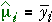
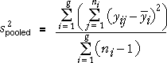

Error standard deviation
In the model,
yij = µi + εij for i = 1 to g and j = 1 to ni
where εij ∼ normal (0, σ)
least squares provides estimate of the parameters µ1, µ2, ..., µg and these describe the variation in the response that is explained by the factor,

The sample standard deviation in any single group, si, is a valid estimate of σ. How should these g separate estimates be combined to give a single pooled estimate of σ?
Pooled estimate of variance
It is easier to describe estimation in terms of variance — the square of the standard deviation
From the data in a single group (say group i), the sample variance is an estimate of σ2,
If the sample sizes are the same in all groups, the pooled variance is the average of these group variances,

This estimate is called the pooled estimate of σ2.
Mixed sample sizes
If there are different numbers of replicates at different factor levels, a more complex formula is needed. The best estimate of σ2 is found by adding the numerators and denominators of the formulae for the g separate variances,

More precisely,

Illustration of pooled variance
The diagram below shows a random sample from a normal model in which the group means differ, but all groups have the same variance, σ2 = 0.9. (The grey bands show the means ± 2 standard deviations for the model.) Note that the crosses have been jittered a little (moved horizontally) to separate them within each group.
The vertical coloured lines from the crosses at each factor level to the level mean are the values whose sums of squares are the numerators of the equations for the si2.
The numerator of the pooled estimate of σ2 is the sum of the numerators for the level variances. The denominator is the sum of their denominators.
Note that the numerator is the sum of the squared lengths of all coloured vertical lines.
When there are the same number of replicates at each factor level, the pooled estimate is the average of the three level variances.
Use the pop-up menu to change the number of replicates. Observe that the pooled variance is closest to the variance at level 1, the level with the most replicates. Note that if one group has no replicates, then it cannot contribute to the estimate of the pooled variance.
Degrees of freedom
We briefly mention here that the denominator of the formula for the standard deviation, si2, at level i is (ni − 1) and this is called the degrees of freedom for this estimate of σ. It reflects the amount of information used by the estimate.
In a similar way, the denominator of formula for the pooled estimate of σ is called the residual degrees of freedom.
Degrees of freedom will be described more fully later.